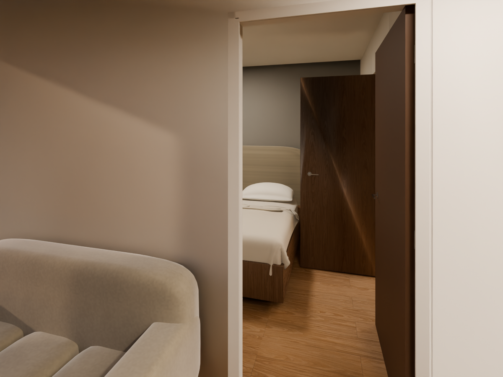

Virrey del Pino · Cedro Misionero
R7 / avance en revisiónLa distribución actual, en un modelo editable.
El dormitorio tiene acceso propio desde el estar. El vestidor conecta únicamente el dormitorio y el baño. El baño del monoambiente se ubica junto a la fachada y la medianera derecha.
Objetivo de la revisión independiente: 9,9/10 e hiperrealismo fotográfico. R7 aún no tiene nota ni aprobación. La última evaluación integral de R6K fue 8,3/10.

Qué incluye este avance
- Distribución corregida de dormitorio, vestidor y baño del monoambiente.
- Sentidos de apertura revisados y recorrido de cámara comprobado.
- Escenas de día, noche e inspección con la misma geometría.
- Corrección del agua de la pileta y avances de textiles, huerta e iluminación.
Qué sigue en revisión
- Revestimientos de baños y coordinación de ventilación.
- Forma y materiales de sanitarios y pavimentos.
- Renders definitivos, visor interactivo y todos los planos de R7.
- Auditoría integral del conjunto por el crítico independiente.
El visor principal y los planos todavía muestran R6K.
Esta página y el Blender de avance permiten revisar los cambios de R7. El visor interactivo, las 19 imágenes y las 33 láminas se actualizarán juntos desde la próxima fuente integrada.
Controles, archivo y huella de esta publicación ↗
Video pausado hasta autorización explícita.